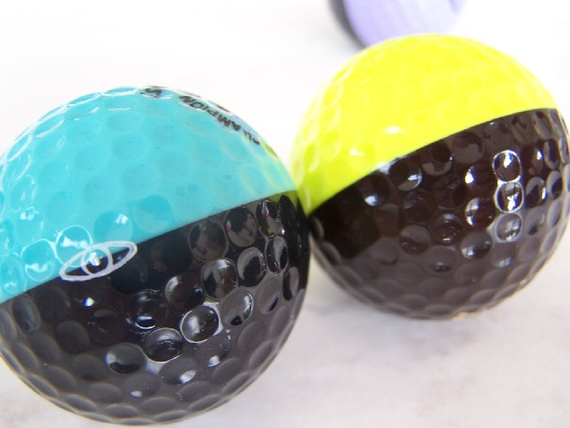

Does Karsten still make Ping golf balls?
No, production of Ping balls ceased around 1997. The golf ball making equipment has been removed from the Karsten plant. The building that Karsten used for Ping golf ball production is now being used for club production. See our Ping ball production history for the full timeline.
How many different 2-color combinations were made?
Karsten did not keep records on the volume of colors. When collectors telephoned Karsten with this question, the answer usually received was "72." However, our complete color combinations guide shows that the number of colors is greater than 250. Colored balls were made for customer orders and not for stock. Karsten had basic colors and mixed a powder in to change colors.
Which type is most rare — Eyes, Eye2s, or Promotionals?
Eye2 color combinations are probably more rare because their production time was much shorter. Eye2s were around for only a few years before Karsten decided to quit manufacturing the duo-colored balls.
Promos should be the rarest because they were usually balls that had some type of quality problem. Promos in the common colors are very easy to find. Karsten provided lots of Promo balls that courses could use for their junior programs.
What is the value of faded, discolored, or sliced Pings?
That is determined by the color combination, the type, rarity, and the amount of damage. It is impossible to place a value on damaged Pings without seeing them in person or at least seeing clear pictures.
Do the Ping balls that are all white have any value?
Yes, and no. Most collectors limit their collections to the colored Pings. There are a few collectors who do buy and sell the white Pings, thus they do have value. The demand for the white Pings is much, much lower than it is for the colored golf balls.
Is this a brown Ping golf ball that you have listed as rare?
Probably not. If the Ping ball is a used ball, more than likely it is a red Ping that has changed color from being in the water and mud. A brown Ping ball is the color of a Hershey Chocolate Bar.

A Brown & Yellow Ping ball beside an Aqua & Black Ping.
How can you tell the difference between a Ping Michael Jordan Ball and a Wilson Michael Jordan Ball?
The dimple patterns are different, and on the Ping, the #23 appears to be more rounded.
Is it too late for me to start a collection? Can Ping balls still be found?
No, it's not too late to start a collection, as it is still fairly easy to find Ping balls for your collection. Some collectors are still finding them at golf course pro shops. eBay is a good source and fellow collectors enjoy buying, selling, and trading.
Related Resources
- 🎨 Complete Colors & Values Price Guide — Browse all 250+ Ping ball color combinations with market values
- 📚 Ping Ball Production History — The full story from 1976 to 1997
- 📷 Photo Gallery — See rare color combinations and collection displays
- 🤝 Collector Profiles — Meet fellow Ping ball collectors